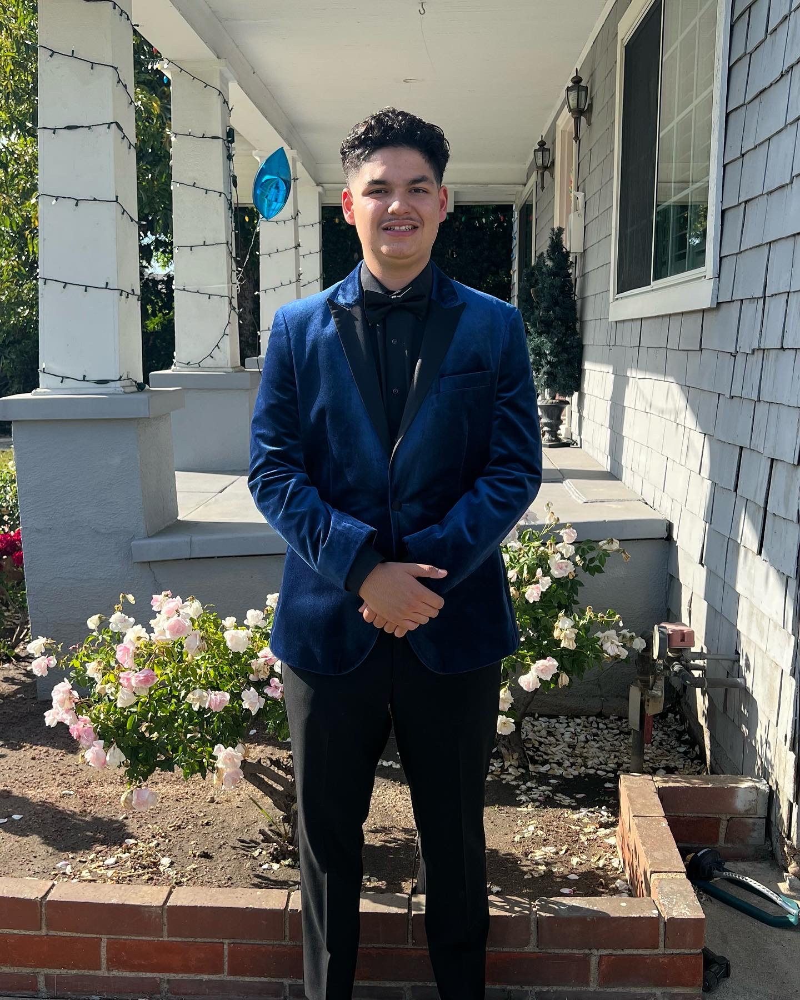

At a Glance
- Education
- B.A. Communication (Public Relations)
Cal Poly Pomona
Transfer from Pasadena City College - Certifications
- Canva Essentials
Graphic Design Principles - Core Focus
- Short-Form Video Production
Creative Direction
Social Commerce
Hi, I’m Maximus Attallah.
Cal Poly Pomona | Strategic Communication
Connecting entertainment brands with high-retention fan communities through dynamic short-form video production, creative visual direction, and live social commerce.

Based in
Greater Los Angeles
01 / The person behind the work
A strategic communicator who thinks in stories, audience behavior, and the next frame.
At a Glance
I am an emerging public relations and creative media strategist pursuing my Bachelor of Arts in Communication with an emphasis in Public Relations at California State Polytechnic University, Pomona. My academic background focuses on strategic messaging, digital storytelling, audience research, and visual media ethics.
Beyond the classroom, I serve as the co-creator, creative lead, and video producer for ThePopTwins (@thepoptwins_), a creator brand across Instagram, TikTok, and YouTube specializing in pop-culture entertainment, collectibles, and live social commerce. I direct and edit short-form video deliverables, engineer visual hooks, and manage live-stream production environments.
My production capabilities include certified graphic design, advanced short-form video editing with CapCut and Final Cut Pro, studio lighting/audio setup, and multi-platform campaign scheduling via Meta Business Suite. My customer-facing and operational experience has strengthened my team collaboration, rapid problem-solving, and adaptability under deadline-driven pressures.
My goal is to secure a creative content producer, digital publicity, or social media coordinator role at major studios such as NBCUniversal or Warner Bros. Discovery. I aim to create compelling behind-the-scenes content, franchise marketing assets, and interactive creator campaigns that turn audiences into dedicated fans.
02 / Experience & capabilities
California State Polytechnic University, Pomona
B.A. Communication, Emphasis in Public Relations · Jan 2026 – Present · GPA: 3.52
Pasadena City College
AA-T Communication Studies · Conferred 2026 · GPA: 3.53
Pasadena City College
A.S. Business Administration, Marketing Management · Conferred 2026 · Dean's List
Canva Essentials · Graphic Design Principles
Co-Creator & Video Producer | ThePopTwins (@thepoptwins_)
2024–Present · Direct, shoot, and edit short-form video content across Instagram, TikTok, and YouTube. Co-host and manage production for live interactive auctions on Whatnot with full item disclosure.
Customer Service & Operations Specialist
Community & operational roles · Frontline service, conflict mediation, and operational support.
03 / Selected work
Curated Public Relations, Multimedia Production, and Strategic Communication Projects
COM 4465 Course Project & Creator Brand Deck. Co-Creator, Production Lead & Visual Deck Designer in collaboration with Marcus Attallah.
Goal: Build a visual identity, content architecture, and monetization funnel for a niche social commerce brand.
Outcome: Produced a 13-page strategic roadmap earning a 15/15 rubric score.
View Strategy Slide Deck (PDF) ↗Published live social media deliverable for Instagram Reels. Creative Director, Video Producer, Lead Editor & On-Camera Talent.
Skills: Visual hook engineering, dynamic jump-cut pacing, sound design, burned captions, high-contrast overlays.
Watch Live Reel ↗COM 4465 content strategy deliverable. Content Planner & Production Director.
Outcome: Designed an actionable four-pillar schedule integrating collector carousels, behind-the-scenes organization, and voice-over narratives.
Review Content Roadmap ↗University coursework project; academic/speculative campaign. Visual Content Producer & PR Strategist.
Outcome: Formulated a nonpartisan visual communication plan for collegiate audiences and the CCEP Election Fair.
View Campaign Brief ↗University communication coursework. Solo Campaign Researcher, Speechwriter & Speaker.
Outcome: Researched, drafted, and delivered a persuasive presentation with clear calls to action for students facing academic burnout.
Read Speech Outline ↗04 / Start a conversation
Whether you’re building a campaign, producing a story, or looking for the next creative teammate, I’d love to hear from you.
LocationGreater Los Angeles / San Gabriel Valley, CA